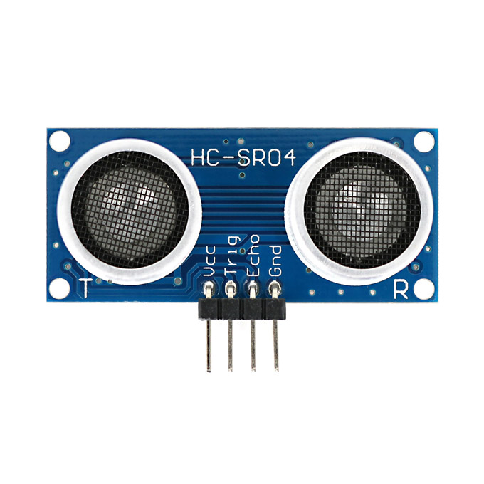
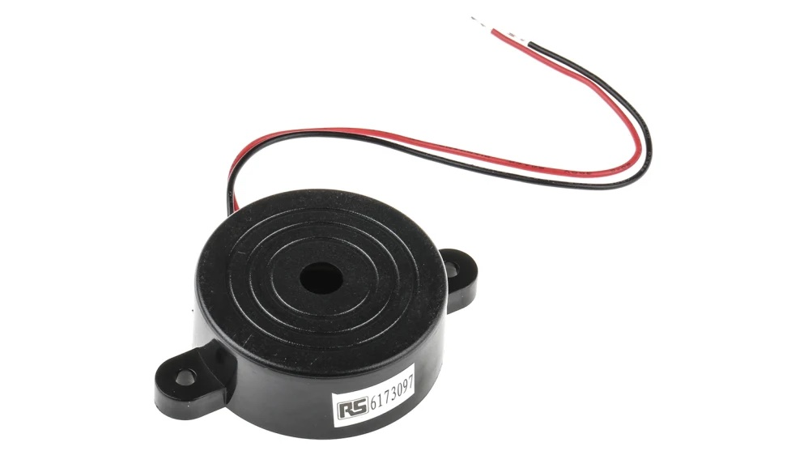
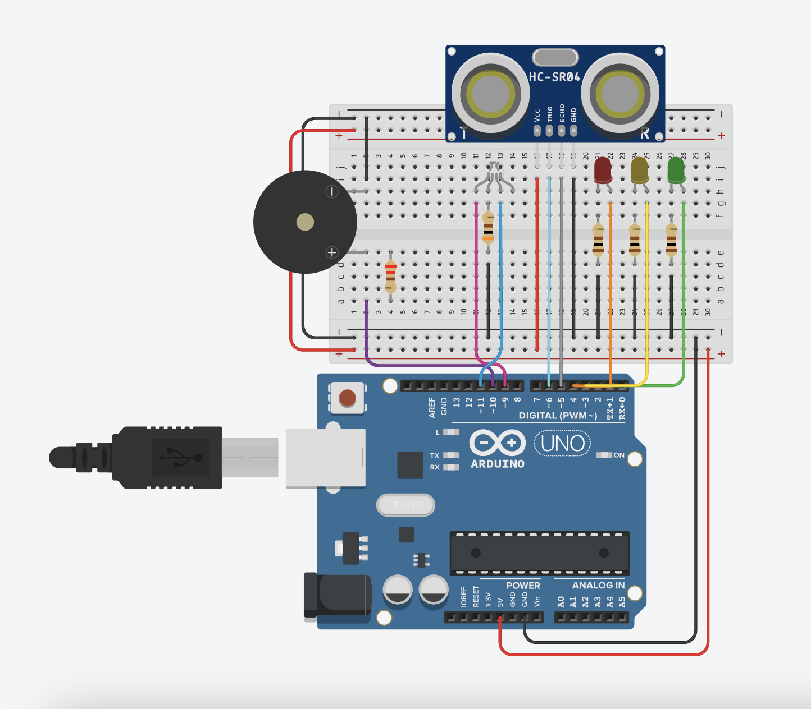

RUOLI:
Carlesso → programmatore
Cecchin → documentazione
Tognonato → interfaccia utente-web
Tutti i componenti hanno partecipato all’assemblaggio di Arduino e alla costruzione del modello in Tinkercad
SENSORI UTILIZZATI:
Sensore di distanza ad ultrasuoni HC-SR04:
Il sensore HC-SR04 non ci da direttamente la misura della distanza dell’oggetto, ma lo si utilizza per emettere un treno di impulsi ad ultrasuoni. Gli impulsi sonori saranno propagati nell’ambiente circostante e, se incontrano un ostacolo, torneranno indietro verso il sensore che li ha emessi. Quando il sensore “sentirà” il ritorno dell’impulso sonoro porterà a stato basso il suo pin Echo (che nel frattempo era stato portato automaticamente alto).
Misurando il tempo che intercorre tra l’emissione del segnale sonoro ed il suo ritorno potremo calcolare la distanza dell’ostacolo sul quale è rimbalzato.

Piezo:
Il buzzer piezoelettrico (chiamato più brevemente piezo) è uno tra i più piccoli dispositivi di segnalazione acustica. Viene solitamente utilizzato quando lo spazio disponibile per il dispositivo di segnalazione è molto limitato. È particolarmente utilizzato negli armadi di comando o nella tecnologia di controllo. Il piezo buzzer è adatto per segnalazioni acustiche a distanza ravvicinata, ma raggiunge comunque una pressione sonora fino a 105 dB grazie alle sue dimensioni ridotte. All'interno del piezo si trova un disco piezoelettrico con cristalli piezoelettrici. Applicando una tensione elettrica, i cristalli del disco generano vibrazioni e il suono viene prodotto. Più alta è la tensione, maggiore è la vibrazione dei cristalli piezoelettrici.

DESCRIZIONE PROGETTO:
Componenti:
Arduino Uno, breadboard, cavi di diversi colori, led rosso, led giallo, led verde, led RGB, 3 resistenze 100 ohm, 1 resistenza 300 ohm, 1 resistenza 220 ohm, sensore di distanza ad ultrasuoni HC-SR04, piezo.
Assemblaggio:
Innanzitutto, abbiamo collegato la breadboard ad Arduino Uno. Abbiamo inserito il sensore di distanza e collegato i quattro pin necessari (Trigger=6, Echo=5). Abbiamo poi collegato il piezo, utilizzando una resistenza 220 ohm (il suono cambia in base a quanto è alta la resistenza). Infine, abbiamo inserito i tre led colorati uno vicino all’altro, utilizzando tre resistenze 100 ohm, e il led RGB, con una resistenza 300 ohm (ne serve una più resistente).

Funzionamento:
Abbiamo utilizzato il sensore di distanza e il piezo assieme in modo da creare una sorta di allarme. Quando un oggetto si muove da una distanza di 250 cm fino a 150 cm si accende il led verde (pericolo minimo); quando si muove da 150 cm a 75 cm si accende il led giallo (pericolo medio) (il led verde rimane acceso); quando si muove da 75 cm a 40 cm si accende il led rosso (pericolo alto) (gli altri due led rimangono accesi); quando si muove a una distanza inferiore a 40 cm, si accende il led RGB e il piezo inizia a suonare (pericolo massimo, si attiva l’allarme) (i tre led colorati si spengono).
PROBLEMI RISCONTRATI:
Inizialmente la nostra idea era diversa: volevamo utilizzare il sensore di movimento e quello di rilevazione di gas, quest’ultimo con l’aggiunta del piezo. Il problema è che non sapevamo come collegare i due sensori, essendo molto diversi. Avremmo potuto utilizzarli separatamente, ma volevamo creare un progetto unitario e coerente. Per questo motivo, abbiamo mantenuto il piezo, perché ci sembrava utile per creare qualcosa di interessante, e abbiamo aggiunto il sensore di distanza a infrarossi, creando una sorta di allarme.
A livello teorico abbiamo riscontrato una piccola difficoltà. Avendo utilizzato pochi sensori negli scorsi anni, ci mancavano le competenze per poter creare un progetto di questo genere. Per questo motivo, ci siamo documentati attraverso siti web e video su YouTube.
A livello pratico non abbiamo riscontrato alcuna difficoltà.
VALUTAZIONE CRITICA:
Tutto sommato siamo soddisfatti del lavoro svolto e del risultato. Abbiamo ottenuto ciò che volevamo, ovvero un progetto unitario, funzionante e utile anche nella vita quotidiana. Nonostante sia relativamente semplice, ci ha richiesto tempo, creatività e molte conoscenze teoriche (linguaggio di Arduino, i suoi componenti e i linguaggi HTML, CSS e PHP). Riteniamo che, nella sua semplicità, il progetto sia ben ideato e funzionale.